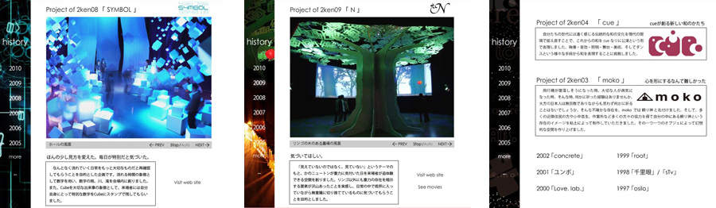

2研企画 総合Webサイト
九州大学芸術工学部の学園祭「芸工祭」でインスタレーションイベントを行うサークル「2研企画」の
1997年から現在までの成果をまとめたWebサイトです。
- 制作期間
- 2010年11月頭〜11月下旬
- 使用ツール
- Illustrator / Photoshop / Flash
- コンセプト
- 2研企画を目で見てもらう
- 備考
- 2人でのグループ制作
担当：全体のディレクション
ヒストリーページのflash制作

九州大学芸術工学部の学園祭「芸工祭」でインスタレーションイベントを行うサークル「2研企画」の
1997年から現在までの成果をまとめたWebサイトです。